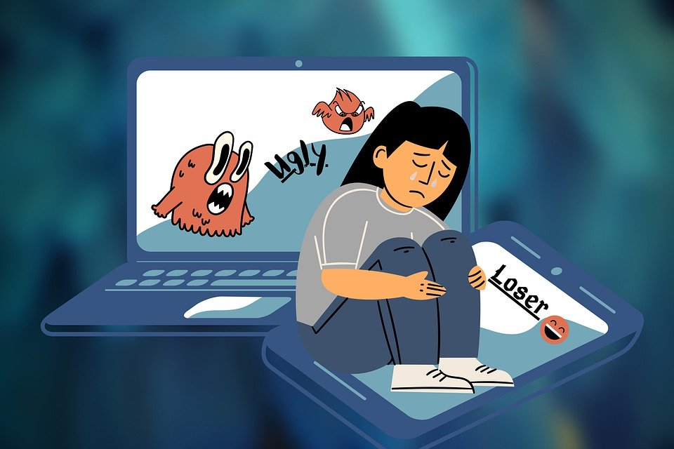

Apa itu Cyberbullying?
Cyberbullying Adalah
segala bentuk kekerasan yang dialami anak atau remaja dan dilakukan teman seusia mereka melalui dunia maya atau internet.

segala bentuk kekerasan yang dialami anak atau remaja dan dilakukan teman seusia mereka melalui dunia maya atau internet.
Berusaha memahami perasaan orang lain. Berpikir secara bijaksana sebelum mengutarakan pendapat di dunia maya. Menghormati orang lain sekalipun di dunia maya.
Tidak lagi berinteraksi dengan kelompok yang melakukan cyberbullying. Blokir akun pelaku cyberbullying. Menyimpan bukti cyberbullying dan melaporkan pelaku ke pihak berwajib. Berkonsultasi ke psikologi atau psikiater.
Empati (memahami perasaan orang lain). Hati Nurani (mendengar suara hati yang membantu untuk melakukan hal yang benar ). Kontrol diri (berpikir sebelum bertindak).
Wik 4
Taj 1
Cic 4
merupakan perilaku berulang yang ditujukan untuk menakuti, membuat marah, atau mempermalukan mereka yang menjadi sasaran. Contohnya termasuk: Menyebarkan kebohongan tentang seseorang atau memposting foto memalukan tentang seseorang di media sosial.